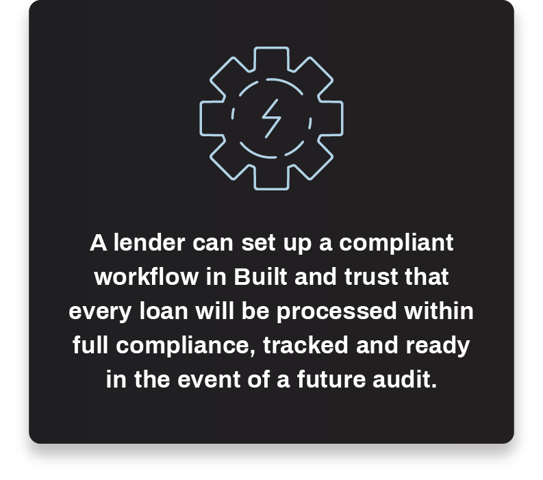

The History of Construction Finance
Construction finance has long been a near-forgotten category in many lenders’ overall portfolios. Despite the earning potential of this highly profitable lending category, some would argue that it’s in a lender’s best interest to avoid construction finance completely. In the US, construction loans generally make up about 3 percent of overall real estate financing across the nation’s lenders.
Still, to look strictly at percentages can obscure the importance of construction finance to the U.S. economy and population as a whole. The country relies on new construction for continued economic growth and prosperity, and developers and builders rely on ready access to capital to fund projects and keep pace with economic demands. Without the free flow of capital and resources, we’re left with a country of citizens who lack access to housing and business facilities.
So, why haven’t more lenders jumped into the construction finance space in the past, and what’s stopping them from jumping in now?
Well, if there is one term more closely associated with construction finance than any other, it’s risk.
Construction loans are arguably more impacted than any other loan category by swings in real estate markets. The US housing and real estate markets, broadly speaking, have experienced a number of booms and busts in the past 100 years. nd dramatic cycles are not friendly to lenders that aim to maintain profitable portfolios over time. So, many lenders have found themselves wary of sinking too much into risky construction loans that could potentially hurt their overall lending portfolios.
Historically, the post-closing construction loan management process has been stressful and administratively burdensome for lenders. When managed manually using legacy systems, construction loans have required more due diligence, more paperwork, more oversight, and many more administrative burdens than conventional mortgage loans. And they include more people in the process, presenting more opportunities for a breakdown.
But history doesn’t have to dictate the future. Forward-thinking lenders have adopted new tools and methods to reduce risk in their construction portfolios — growing their business and profitability without increasing headcount or acquiring potential additional risks.
In this guide, we’ll explore the current state of the construction finance industry, the various aspects of risk related to construction lending, and take a deep dive into new solutions for successfully and proactively managing construction loan risk.
The Current State of Construction Finance
The state of the construction finance industry is a tale of two time periods — the days leading up to the Great Recession and the years in its aftermath.
To understand the differences between the two, we’ll look quickly at the years leading up to the recession as they relate to lending and construction starts. In the early- to mid-2000s, life was good. As the market rebounded from the Dot Com Bubble, the US found itself off to the races when it came to new housing starts. It was easy to operate under the assumption that housing would always be in high demand and as housing prices grew, loan underwriting standards became increasingly lax. In the four-year period from January 2002 to its peak in 2006, new housing starts increased more than 33 percent.
Then the banking world came apart and everyone stopped building. The International Monetary Fund estimates that banks and other financial institutions faced aggregate losses of $4.05 trillion during the period, $2.7 trillion of which came from loans and assets originating in the United States. Additional news outlets have reported total global losses as large as $15 trillion from the crisis.
The financial world needed time to recover.
Rebuilding After the Great Recession
During the Great Recession, new build construction plummeted, remaining at historically low levels for quite some time following — likely for good measure, as the New York Fed estimates that up to 3.5 million excess units were built during the housing book. For years, the housing market was too soft to make investment worthwhile anywhere outside of the most resilient metros. Instead, focus was placed on shoring up loan portfolios to mitigate losses and reduce risk going forward.
Construction growth started in earnest by 2011 and picked up speed from 2012-2015, where new starts increased by 11-14 percent each year. Things have cooled slightly since 2016, to a modest 3 percent growth in 2018. Still, new starts are barely above half of their 2006 peak and there is a growing gap between available housing and pent-up demand.
In many ways, the opportunities for savvy construction lenders to build a profitable loan portfolio with little risk have never been greater.
Why Build a Construction Portfolio Today
The United States is currently facing a housing shortage in many parts of the country. The shortage in housing inventory throughout the US is due in part to the lack of new-stat growth in the last 10 years, though other factors are also at fault.
A Lack of New Housing Starts
The National Association of Home Builders estimates total new housing starts will remain essentially flat in 2019, increasing from 1.26 million in 2018 to 1.27 million in 2019.
There is little affordable housing available on the market. Overall, housing inventory has been steadily decreasing, though inventory had shown signs of reversing course as 2018 came to a close. The only segment of the housing market that experienced sales growth in 2018 were homes priced $350,000 and above, with homes priced above $750,000 seeing the most growth.
As inventory constraints and housing prices grew, we began to see an increase in homeowners choosing to stay in their current homes. Historically low mortgage rates make it more expensive to rebuy anything new, causing many homeowners to stay in their current homes. “There’s so much inventory that’s rate-locked. The spread between 3.5 percent and the current mortgage rate, as that widens, it will just be a stronger and stronger incentive for people to hold on to their homes forever,” said Glenn Kelman, CEO, Redfin.
Instead, many homeowners are choosing to use loan dollars to remodel their current homes into a place they want to stay in. Smart lenders are taking advantage of this trend but it has put additional pressure on the housing market.
This isn’t a new issue. Policies and regulations passed in the aftermath of the Great Recession scared away many lenders for a long time. More than ever, construction loans began to be considered unwieldy and unprofitable. The additional regulatory scrutiny created more hoops to go through and opportunities for steps to be missed. For chief risk officers, those are the types of conditions they’d rather stay away from.
With so many lenders out of the game, construction loans have been harder to come by for a number of years. Even as interest rates remained low, capital didn’t flow into construction as it had in years past. That leads us to where we are today. The housing shortage is real and smart lenders are taking advantage.
Today, the lack of affordable housing inventory has created a supply “safety net,” even if we begin approaching a cooling construction market. The 2008 housing crisis was defined by excessive housing supply, which contributed to the sharp drop in prices across the nation. Those same conditions aren’t anywhere to be found today. If anything, there is greater pressure on builders and lenders to keep pace with increasing housing demands.
Demographics
Millennials are growing up, leaving their parents’ houses, and starting families. In 2018, they also demonstrated they’ll need houses, as they became the largest percentage of homebuyers in the US at 36 percent.
For years, the real estate industry has waited for Millennials (set to become the largest living adult generation in 2019) to step into their American Dream and buy their first homes. And for years, stagnant wages and the burden of student loan debt kept home purchases on the backburner. Only 37 percent of Millennials own their own home, compared to nearly 46 percent of Gen Xers when they were the same age.
But as Millennials hit their late 20’s and 30’s, they’ve started to make some moves. They place homeownership above their most other life priorities, including marriage and kids, only behind retirement. Further, 38 percent of first-time home buyers plan to make a purchase within the next two years. They’re ready but they’re wary.
Home price is a big concern. Millennials are willing to buy fixer uppers, but they’re having trouble finding affordable homes in their price range. This issue may also be due in part to expectations. More than 47 percent plan to buy a home for under $200,000, while nearly 75 percent plan to buy a house for less than $300,000. Given that the median home sale price is nearly $280,000 today, they’re finding little inventory on the market that fits their needs.
Available housing that matches these new buyers’ financial desires and options will go a long way in easing the current shortage and could be a big win for lenders and builders willing to build it.
Appealing Competitive Landscape
Some lenders are still reluctant to heavily invest in construction due to some of the myths and fears we will address later. This makes, we’d argue, the potential upside for those willing to get into the construction game quite compelling, as they still face little competition. Look no further than Bank OZK for a prime example. Once a regional bank, it has grown from $3.8 billion to $22 billion in assets since 2011 through intentionally building a large construction portfolio when few others were willing to put their money there. Today, OZK is one of the nation’s largest construction lenders, ranked in the top 10 in the nation in terms of construction loans. While some in the industry are still skeptical of their strategy long-term, it has produced an outsized return in the past 10 years.
Lenders looking to get into construction finance don’t have to create nearly as substantial a portfolio in either assets or regional breadth to take advantage of new opportunities in construction. They simply have to get their money off the sidelines and use the right tools to successfully build their portfolio while eliminating potential risk and compliance concerns.
Technology
Nothing else today has the potential to impact the overall risk of a lender’s portfolio, especially in construction finance, than technology. Unlike in the days preceding the Great Depression, technology exists that can make construction lending a win for lenders: easier to manage, far less risky, and loved by borrowers and builders. The smart money is investing in what’s next and technology is where those investments are headed.
We’ll explore the benefits of modern financial technology later in this guide, including all of the ways fintech can impact and effectively mitigate a lender’s overall portfolio risk. As you’ll see, the introduction of modern technology has laid to rest many of the myths that have haunted construction finance over the past decades.
Construction Lending Myths & Misnomers
Construction loans have a history of being seen as a high-risk, complex asset class. Prior to the introduction of modern technology, many lenders chose to avoid construction lending completely, due to the heavy demands on time, regulatory obligations, and the sheer amount of paperwork and communication involved in the management of each construction loan.
As refinances taper off and housing inventory remains low, opportunities in the construction lending market continues to expand. However, many financial institutions are missing out on this potential growth because their lending departments simply cannot handle the post-closing administrative work associated with an expanding portfolio of construction loans. On the other hand, financial institutions that have continued to approve construction loans, despite departmental limitations, can find themselves with mismanaged loan files, unmet regulatory obligations, and a portfolio filled with unmonitored loans, exposing the institutions to risk on two fronts: lending and compliance.
By implementing modern technology, lenders can increase the administrative capacity of their lending teams while improving risk mitigation, collateral management, portfolio monitoring, and regulatory compliance. Below are the common construction finance misconceptions that modern technology is helping to resolve.
Myth: Construction finance is painful.
Construction loan management is stressful, requiring piles of paperwork, manual spreadsheets, numerous phone calls, emails, faxes, and in person meetings with borrowers, builders, and inspectors.
A modern solution: Lenders across the country have begun to utilize modern construction lending technology to take the stress and pain out of effectively managing and growing their construction portfolios. By eliminating siloed systems and unsecured and excessive handoffs, construction lending software eliminates layers of manual processes and potential opportunities for risk.
Myth: It’s too risky to manage and grow a successful construction lending portfolio.
Construction loans present countless known and unknown pitfalls for lenders. Construction portfolios are subject to potential draw discrepancies, inspection oversights, compliance errors, miscalculations, miscommunications, and properly reconciling and maintaining construction funds is nearly impossible.
A modern solution: Construction finance software proactively mitigates risk through real-time portfolio management and unprecedented data insights, monitoring, and reporting. By automating many of the data and risk-related challenges commonly associated with construction finance, modern technology alleviates the potential for human error and provides lenders with a means to automate and standardize loan administration processes and procedures.
Myth: Construction finance is a loss leader.
Construction loans are often viewed as a cheap way for lenders to acquire lifelong clients. In other words, many construction loans are done as loss leader loans, meaning a loss is acceptable in order to secure future profits.
A modern solution: There are many ways to make construction lending a money maker. In this day and age, customers have grown accustomed to and inherently expect a modern digital experience. Construction finance software allows lenders to grow and expand their customer relationships by making the draw process user friendly, simple, and consolidated. By offering a best-in-class user experience, lenders are able to attract and retain the best borrowers, builders, and draw inspectors, effectively growing their lending portfolio.
Construction finance is not what it used to be. With the right technology solution, lenders have the ability to take advantage of growing market demands without exposing their overall loan portfolio to unnecessary risk or burdening their loan department staff with increased workloads and unnecessary stress.
Why Risk is so Important to Consider
So why is risk so important for lenders to keep top of mind? Well, in short, lending is all about risk. Life would be easy if every loan were repaid on time, without issue. But things don’t always work out that way. Each loan carries an inherent risk that the money won’t be repaid, and construction loans multiply that risk because an unfinished building can wind up worthless, sitting on a balance sheet. Acting carelessly can send lenders to oversized losses and significant bad debt.
Therefore, lenders have to choose loan products and rates based on a careful risk/reward calculation. Each loan has an expected value, and for each dollar invested a lender can estimate what it should return. Quality lenders aim to create maximum profit by choosing the projects with the highest probability of payback, at the highest possible interest rate. When risk is successfully managed in this way, lenders are profitable and any losses from bad loans are written off without deeply impacting the bottom line. This is elementary, however. The best lenders go a step further. They act before projects become an issue — by choosing the highest quality borrowers/builders and intervening when any loan project is at risk of getting behind — to dramatically minimize losses on the frontend.
If you’re curious about why this extra step can be so important, consider the Great Recession. With total global losses estimated at up to $15 trillion, the event highlights and underscores the tremendous impact of mitigating loss, even slightly. An incremental, 1 percent reduction in those losses would have saved the global economy from $150 billion — a number greater than the GDP of all but the world’s 60 richest countries.
Of course, smart lenders know this. They have teams committed to evaluating and reducing risk across every line of business. They also know that portfolio losses are only one side of the risk equation. The other side, especially important in the decade since the Great Recession, is the risk associated with noncompliance of government regulations. When a government audit is always a real possibility, a Chief Risk Officer and his team know they have to keep their processes in line for the sake of the company.
Common Sources of Risk in Construction Lending
Traditionally, some lenders have avoided construction loans because they are known to carry more risk than permanent loans or other loan types. While we believe many of these risks can be mitigated or even avoided completely, we don’t want to overlook the realities of construction lending. Below are a few of the most common sources of risk in construction lending.
The Nature of Construction
Dealing with any real estate loan for a structure that hasn’t yet been built is inherently more risky than with something that already exists. Lenders have to be willing to acknowledge that if they want to make money in construction finance.
The first income-related risk to note is that construction loans don’t produce as much income as many loan types at the start because they’re generally interest-only during the construction phase. That means lenders aren’t receiving any payments on principal for a few months, which can lead to potential losses thanks to the second inherent risk in construction.
Some construction projects are never completed or don’t sell as expected. Any number of outside factors can play a role in whether a project reaches completion (or how quickly it’s completed), including the broader economy, construction labor availability, unreliable contractors, legal and permitting issues, and more.
Construction Labor Issues
Especially during times of growing or booming housing markets, construction costs can add risks to a lender’s portfolio. In today’s economic conditions of 3 percent unemployment, sourcing workers for construction projects can be a challenge for builders. In fact, availability and cost of labor were the top concerns for general contractors entering 2019.
As a result, construction projects can end up with higher than projected costs thanks to more expensive labor, or be delayed if a contractor finds himself short of workers. In either case, lenders may find themselves with a project that’s less profitable than expected.
Another risk agent during boom cycles are inexperienced builders and contractors jumping into the game to take advantage of the high demand for construction services. For lenders, it can be challenging to determine who’s trustworthy when they start to work with builders who don’t have a proven track record. As Natalie Myrick, Built’s Director of Mortgage Solutions, notes, this phenomenon brings up a number of questions for lenders, including: “How do we make sure inspectors are checking every box to make sure corners aren’t cut? Are builders going to be underbidding? And are banks going to allow more contingency or finance that contingency?”
Lenders today need to be cognizant of who they choose to work with and the safeguards they put in place around that.
The Human Factor
Beyond the environmental risks intrinsic in any construction project, we alluded to one of the human risks in the section above. There are always risks when doing business with people — borrowers, builders, and our own employees alike. While you may assume we’re referring to people who might have an intention to cheat us, what we’re really talking about are the natural errors and mistakes that humans make.
We all know that we aren’t perfectly rational decision makers, no matter how much we might like to be. This reality can have both tremendous benefits — approving a loan for a borderline borrower that ends up producing a nice profit — and downsides — giving draw disbursements based on trust for a project that is off track. People also have imperfect memories, unlike machines, and can place too much trust in them, skipping over important steps in a process or neglecting to follow up with a customer because something else came up.
And these errors can be exacerbated by many of the risks factors below, related to the tools we use to help us reduce errors. We’ll never eliminate people from the equation, so it’s best to create systems to reduce the risk our imperfections bring to lending.
Processes and Procedures
If humans are fallible, then it stands to reason that the processes we create will be, too. And while it can be difficult to acknowledge that we create risk for ourselves in the systems we create for our teams, we can’t skirt around it.
When we talk to lenders — anyone from loan administrators to the heads of finance at a financial institution — one of the biggest pain points they describe is the manual, repetitive nature of loan administration and the cumbersome processes they follow on a daily basis. On the surface, rigid processes don’t seem to be a source of risk for lenders, as they’re intended to ensure nothing is missed. However, when procedures become too burdensome, they present unanticipated risks that lenders need to be on the lookout for.
First, we’ve found that the numerous changes to federal and local regulations, especially in the last 10 years, have created Frankenstein-like procedures and processes. In an attempt to keep up with ongoing changes, lenders have added onto existing process, slowly creating new layers of work for themselves. The first risk here is that anyone who doesn’t have the full history of where procedures started and are today might not understand why particular processes have been put in place, and therefore they might miss a critical piece of the puzzle. If things get too convoluted, it can be easy to skip a step without knowing it, especially when data has to be manually input into multiple systems.
The second risk is that people might decide that processes have become too cumbersome and willingly skip steps to make their lives easier. Human willpower energy is in limited supply and when lenders are presented with multiple decisions throughout their day, it’s easy to understand why they might take shortcuts on a process. Still, shortcuts made along the way can add undue risk to a lender’s portfolio.
Current Technology
Technology is a critical piece of the process and procedure conundrum we discussed above. Beyond the human factor of potentially missing a step within an important process, risk is often due to the siloed systems and tools lenders use to manage the lifecycle of a loan, each of them treated separately and disconnected from the rest.
Technology has been growing rapidly over the past 20 years, especially in the past 10 years, with new software tools for various functions coming out on a regular basis. While they’re meant to create efficiencies, if they aren’t integrated properly, they can actually add an additional layer of work to a loan administrator’s day.
Here’s an example of the potential steps a lender may have to take just at the beginning of a construction loan lifecycle. Let’s suppose a lender closes a new construction loan. Immediately, its details have to be rekeyed from their LOS to the lender’s core system and into the Excel spreadsheet the administrator uses to track draw disbursements or permits. Each of these three separate systems might need to be used to track the loan every time there is a change in status, and this doesn’t even include the file management required if new permits are added during the project’s lifetime.
That spreadsheet often looks like this:
It’s no wonder that construction loans are viewed as onerous and high risk. One slip of a keystroke in any of those systems can create accounting discrepancies that could potentially cost the lender significant money. Tiny errors like these add up over time, creating losses from loans that should produce a profit.
The challenge of legacy technology stacks is threefold: many of them weren’t designed for construction loan management and the intricacies they bring with them, they may be designed from outdated software systems and incapable of truly integrating together, and thus they remain siloed so that loan administrators have to take it upon themselves to make sure things are reconciled accurately at all times.
Lack of Transparency
Given the number of moving parts, people, and steps involved in construction finance, communication and transparency become major issues for lenders. Going any length of time without knowing the status of a project can cost real dollars and put undue stress on a construction portfolio.
If I can watch Domino’s make and deliver my pizza in real-time, why can’t I see what’s going on with my construction loans?
Today, many lenders lack a streamlined and secure communication channel to use when moving projects forward. Messages and documents are often sent via phone, email, text message, mail, or even fax. We hear stories of administrators spending their entire day trying to respond to messages and get people on the phone just to get details on the status of their projects. Not only are these myriad communication channels inefficient, they’re risky for lenders. Messages exchanged via phone or text aren’t tracked and audited or stored permanently.
Even more, the channels mentioned above don’t always include all relevant parties. Invariably, someone either ends up being the go-between or important information is potentially not shared with everyone who needs it. This adds friction between builders, borrowers, inspectors, and lenders and can risk timely project completion. Implementing tools that streamline communication and enable transparency for all key parties reduces that risk.
To demonstrate this point, our CEO Chase Gilbert will often ask the question: If I can watch Domino’s make and deliver my pizza in real-time, why can’t I see what’s going on with my construction loans?
This question points to another reality lenders need to look at. There isn’t just regulatory and financial risk in the opaque nature of many construction loans today. Lenders are facing potential backlash from borrowers if they can’t provide them with accurate details on what’s going on during a build. Customers today are learning to expect greater access to information, where they want it, when they want it. And lenders that can’t keep up find themselves at risk of being left behind.
Lack of Bandwidth
In an ideal world, lenders would be able to work with a constant view of their loan portfolio overall, along with each project and all its variables. And from that view, they’d be able to craft forward-looking models using real-time data in order to make the smartest decisions about their portfolio going forward.
Unfortunately, for many lenders this is no more than a dream, thanks to the limited bandwidth of their teams and the technology at their disposal for monitoring, reporting, and reacting to changes.
With administrative tasks that end up being duplicated across numerous steps and convoluted communication that’s distributed across multiple channels, loan administrators run out of time to do the deep analytical work required to make forward-thinking lending decisions. Reporting is put on the backburner in favor of simply keeping up with loan servicing and following proper procedure. Most lenders know they should be putting more time and effort into reporting and monitoring, but they simply lack the bandwidth to do so.
Then, when there is bandwidth to carve out some space for reporting, the process can be a headache. In many cases, creating a report requires loan administrators to manually gather data from various spreadsheets and paper files when assembling reports. This manual and time consuming process can cost credit departments days, or even weeks of valuable time, and as a result, many financial institutions only review comprehensive portfolio data when it is deemed absolutely necessary. Put aside for a moment the human errors in spreadsheet reporting we mentioned above, this lack of oversight leaves lenders vulnerable to compliance issues and unexpected risk.
How Lenders Measure Risk
Having an accurate gauge on a construction loan portfolio (even as a part of a lender’s entire portfolio) is essential for accurate forecasting and business planning. Acting without accurate information is problematic for lenders and can lead to portfolio write-offs. While there are a number of ways for lenders to measure risk within their portfolio, we have included some of the most common and effective ways.
Pipeline Testing
Lenders need to be able to measure whether their incoming pipeline is strong enough to continue to operate their business. Without new business coming in and old business going out, the loan portfolio will dry up. At the same time, lenders don’t want to grow too quickly and overextend their commitments. We’ve found a target commitment amount for some lenders is around 45-55 percent, a level that effectively balances how much they’ve advanced and how much they’re committed to in the future. Other levels may be appropriate for other lenders.
Disbursements and Loan Schedule
Once a loan has been committed to, it’s critical for lenders to report on its status on a regular schedule. Even a simple measurement like time into a project versus percentage completed can help lenders identify problem loans before they get too far off track.
Some common questions useful in measuring a loan schedule:
- Are disbursements going out on a regular basis. Why not?
- Is a project roughly on schedule based on its estimated timeline?
- Are there any potential permitting or lien issues preventing work from being complete? How will that affect the schedule?
- Have there been any issues during inspection or holding back of draw funds?
Internal Audits
There are a number of possible documents and reports a lender might pull for an internal audit. The one we’ve found to be most common and fruitful is a loan-by-loan look at a project’s documentation and process tracking, compared to the lender’s written procedures. Taking care to look inside a loan file allows a lender to identify and correct common mistakes by an individual team member or team.
Common issues include disbursement issues, missing lien waivers, and slow inspection turnarounds. Seemingly inconsequential issues like an administrator forgetting to upload a document that’s sitting in their inbox are identified and handled before they create compliance concerns. From there, lenders can do additional training or fix problematic processes with more clarity of the issue.
Builder Tracking
Smart lenders understand their business success is a function of the people they work with. Builder tracking reports help lenders identify which builders are most likely to complete projects on time, or even early, so they can choose the best partners and adjust their interest rates to make the best decisions for their business. Common measures of effective builder tracking include a builder’s credit, behind schedule projects, inspection results, and permit history.
Without construction loan software, each of these risk measurement tools is subject to the same opportunities for human error and process mistakes as the rest of the loan process. Below, we’ll explore the ways lenders can reduce or even eliminate risk from their portfolio.
Ways to Reduce Risk in Construction Lending
Smart lenders don’t simply measure risk for the sake of it. They create plans and strategies for taking the next step and reducing the impact of that risk on their business. Each source of risk in a construction loan is also a great opportunity for the forward thinking lender to seek out ways to mitigate their unique risk. While it’s impossible to completely eliminate risk in any business, there are some universal principles available to any lender for managing their construction portfolio.
People
We’re present to the fact that humans are fallible creatures. We can’t fix it but we can manage the risk it provides us. The best approach for mitigating the inherent risks of having human employees and partners is twofold. First, work with high-quality, committed people you can trust to provide quality work. Secondly, create systems that allow them to do what they’re best at while passing off the things that don’t match their strengths.
Builders and Borrowers
Lenders know their business runs on working with top-quality borrowers and builders. As we established above, construction is inherently risky because so many factors are outside a lender’s (or builder’s) control. So, as a lender, it’s critical to make sure you’re working with builders you can trust to complete a project on time and within budget.
This is where relationships become important. When the real estate market is hot, new builders and contractors emerge to take advantage of the opportunity. Lenders with deep relationships in a region will be better equipped to know who they can trust and who they can’t. That requires both lending officers committed to creating relationships and processes that allow them to get away from administrative tasks related to keeping a project running.
While the human relationship aspect of identifying quality builders is vital, there is another tool, as well, that is becoming available to lenders today — builder tracking systems. Lenders can now use historical data to identify the builders most reliable to complete their projects on time, as well as profiles to ensure builders are licensed and insured. This information allows lenders to offer products that work for them, to builders they can trust.
Employees
It can be a challenge to admit that our own employees can be a major source of risk. After all, we hired them because of their knowledge and work ethic, and we want to trust them to do perfect work every day. Still, we’re humans and we all make mistakes — ourselves and our employees included. We have good days and bad days. We make decisions based on emotions. We lose focus.
As a lender, it’s essential to do what we can to reduce or eliminate the potential mistakes our employees can make, along with the potential impact of those mistakes. Each of the following sections has been included as a potential means for doing just that, while giving them freedom to do what they’re best at — build business and serve customers.
Processes
Process is a million dollar word for lenders, especially in construction. With so many moving parts and potential fault points, construction loans need quality processes and tracking in place to keep them on track. Structure is necessary for a number of reasons, including collaboration, government compliance, customer service and transparency, and more. The tricky part is that each of us has preferences about how we do our work, how we communicate, and how we manage our time. Successful lenders create processes that work for them based on their team’s talents, their individualized products, and internal policies. The big lesson: make sure procedures are in place and that your team actually follows them.
Policies and Procedures
The freedom that financial institutions receive in creating and implementing their own regulation policies and procedures can be a double-edge sword. On one hand, they can ensure their policies match their own standards and operating methods. On the other, they’re responsible for implementing and following procedures to match their policies. Effectively removing risk from operational policies and procedures is simply a matter of lenders doing what they say they’re going to do.
Putting proper structure in place is key to eliminating compliance risk and ensuring lending procedures match any reported policies a lender has. These can include, but aren’t limited to:
- Automated portfolio health reports
- Tracking draw requests, construction progress, and fund disbursements
- Active monitoring for stale loans
- Single, secure channels of communication between all parties
- A document library for active licenses, liens, and titles
Technology
If there is one recurrent theme across most industries today when it comes to ways to improve efficiency and reduce errors, it’s technology. We now live in an age of exponential technology growth, in which advances in computing technology can take rote work off our plates while also giving us access to data never before available. And when it comes to reducing risk, both of those capabilities play critical roles.
Tracking Policy and Procedure
The most obvious benefit of technology is in its ability to store data securely and permanently. Bringing offline work — handwritten notes, printouts, and massive Excel spreadsheets — onto a collaborative platform means that every step a lender takes when managing a loan is tracked and that any questions that come up later can be quickly answered simply by looking at the audit trail.
Automating Processes
We’ve gotten clear on the risks posed by duplicative, manual processes throughout the loan lifecycle, along with the ways in which inefficient processes waste time and money at each step. So how does technology solve for that? Simply put, the right platform can create efficient and standardized processes that everyone can follow to improve compliance and reduce duplicative tasks.
The first benefit of technology is its ability to integrate multiple systems to allow data to flow freely between them. When using a loan management platform, lenders can update key points of data either in their core system or the management software, to then have it automatically updated everywhere it needs to go afterward. No more keying the same data into an online tool and Excel. Enter it once and everything is up to date.
An example to illustrate the efficiencies created by automation and integration, using the Built platform as reference:
As a lender closes a loan and moves it into their core, a data connection automatically seeds a new project in Built with relevant information. As relevant details are updated in the core, the project is automatically updated in Built. If, say, a disbursement was made but not recorded in the core system, an alert will be sent via a reconciliation email to prevent any accounting errors from impacting the loan.
Further, Built talks back to the core and in some cases can trigger additional events. Let’s say a draw is requested and a lender receives an alert in Built. They can schedule an inspection and, once it’s completed, approve the draw request — all within the Built platform. Those steps are shared with the lender’s core system each night keeping both systems up to date. Depending on the level of integration the lender has set up, they can either disburse funds themselves and track the transaction or use the Built platform to trigger a real-time action within the core system. So when a lender approves a draw request, money is immediately moved to a payee via their core system. No waiting and no need to use multiple interfaces.
Past worries like change orders, missed transactions or inadequate budget are no longer concerns because Built will perform automatic reconciliation checks and send an email alert if anything doesn’t match.
Even better, construction finance software keeps a permanent audit trail of every action taken on the system to ensure processes and procedures are followed throughout. A lender can set up a compliant workflow in Built upon setup and trust that every loan will be processed within full compliance, tracked and ready in the event of a future audit. And loan administrators are incentivized to follow the process because it’s less cumbersome than using multiple systems.
Reporting
One of the promises of technology today, no matter the industry or application, is its ability to store and retrieve data much more effectively than humans. As the cost of computing and storage continues to trend toward zero and machine learning continues to evolve, the only limiting factor to what we can use from data will be our own imagination.
For lenders, this means the possibility of creating ongoing reporting that is always available, forward-looking, and customized to their specific needs. And for Chief Risk Officers, the implications of this capability in reducing their institution’s risk are massive: ensuring compliance at every step, predictive risk analysis before lending decisions are made, real-time alerts on any project, and more. Some of the key roles technology plays in reducing risk for lenders:
Automated Reporting and Analytics
Freeing up loan administration staff from tedious data management work is one of the top priorities for many lenders. Hours are spent pulling reports from disparate sources, on an irregular basis, instead of providing better customer support or high-level analysis on the data to help decision making.
One of the biggest advantages of loan management software is its ability to provide automated reporting to the right people, at the right time, with the right data to make smarter decisions. So lenders can check their email and trust they have an up-to-date look at their portfolio on their schedule. With this capability, lenders can make decisions that are based in a solid analytical understanding instead of estimations, and their people can more easily follow the processes that help them to stay compliant and in service of their customers.
To demonstrate the potential financial and time impact technology can create, an analyst for one of Built’s clients use to spend the first 10 days of every business month creating 7 slides to report on construction loans. Post Built, the analyst creates 27+ slides of information on construction within a couple days and can pull even more data quarterly to dive deeper.
Forward-Looking Data
Technology solves the problem of reports always telling a story from the past, like you’d get from pulling data from spreadsheets and paper files. Automation and machine learning allow software to create the reports lenders need to identify any potential problems before they happen.
For lenders with large loan portfolios, it can be a challenge to keep up with numerous loan maturity dates. They can use automated reports to ensure each project within their construction portfolio is on schedule for completion by loan maturity date and make adjustments or course corrections if anything is off.
Having a forward-thinking perspective is also an asset in matters of compliance, especially when it comes to collateral documentation and loan variances. Auditors will have a close eye on anything awry in these areas, and prudent lenders take precautions to keep a tight process in place. With loan management software, lenders can easily pull reports on lien filings — to track lien filings, mortgages, trust indentures, uniform commercial code filings, and other collateral documentation — and rate and fee variances — to identify and document any variances that may exist.
Real-Time Alerts and Notifications
Automated reporting is helpful for reviewing project or portfolio health on a regular basis. But lenders need to know as soon as possible if anything unexpected might affect their risk. Real-time notifications are critical to maintaining a risk-free portfolio today.
Two of the most common applications of real-time alerts are around areas that can really cost lenders money: stale loans and insurance lapses. Lenders need to know if a sudden change in insurance is going to create a loan exception or create a delay in construction. And if issues like those are handled at the onset, stale or inactive loans will decrease or disappear.
Portfolio and Operational Views
Portfolio Overview – This offers a look at your portfolio’s overall health. Visualize things like types of loan projects across your entire portfolio so you can evaluate your overall risk and capacity, in aggregate and at a glance.
Operational Dashboard – This lets you break down the constituent elements that can have a massive impact on your portfolio’s profitability and performance. Track project turn times to improve your draw process. Identify the employees, builders, products (perm-to-close vs. renovation loans), or vendors that create the most profit for your institution. Use meaningful data to make the operational decisions needed to keep ahead.
Together, these dashboards will give you what you need to cut risk and improve the profitability of your construction loan portfolio.
Benchmarking
Hold onto your hats because this one is a doozy. Lenders who’ve asked whether they can compare or measure against any number of criteria, but never had the available data, can use loan management technology to begin to do just that. For the sake of simplicity and brevity, we’ll look at three discrete levels of benchmarking we make available for Built clients, knowing that much more is available.
The first level is historical benchmarking, an obvious possibility. In the past, it was difficult for lenders to get a big-picture look at how their portfolio was performing in comparison to the past. There was too much data, spread across too many tools, to make sense of. Today, lenders can compare their portfolio health, performance, and outlook against their own targets. Armed with that information, they can make adjustments to effectively decrease risk and increase profitability.
Zooming down a level, lenders can also take a closer look at how things are doing inside of their portfolio. They can compare the performance of individual team members against others to gain a better understanding of who’s standing out and why, and use that information to fill in any weakness a team member might have. Shoring up a weak link before any loans go bad can be the difference between significant profit or loss.
Finally, they can zoom way up and look across the entire industry, to see how they compare to other lenders. What used to be a mystery — how some lenders outperformed others year over year — is now information to learn from and act on. For the best performing lenders, it’s an opportunity to continue to ensure they’re strongly positioned no matter the external environment.
Transparency and Communication
For borrowers, transparency and communication go pretty much hand in hand. And for a lender concerned with managing risk, that’s a good thing. Adopting the right tools and processes to improve communication and transparency with customers will inevitably lead to better documentation, faster project completion, and a stronger portfolio (in addition to happier borrowers). Taking loan administration off of paper files and into digital form makes it possible to securely see the status of any project, at any time.
Collateral Management and File Storage
One of the biggest challenges many lenders face when administering construction loans is keeping up with the vast amounts of documentation required on any given project. From lien filings to mortgages to trust indentures to commercial code filings to builder licenses, the number of documents that lenders need to keep up with can be dizzying. And some of those documents have expiration dates mid-project that need to be tracked.
We know that accepting files via fax, email, and postal mail isn’t a risk-free strategy. The best way to ensure everything is up-to-date and in place is to use a digital solution for document tracking.
Inspection Tracking
Beyond storing and managing critical documents, technology offers lenders and builders a platform for managing every aspect of the draw and inspection process. For example, builders can request a draw inspection directly from Built’s platform and lenders can schedule an inspector immediately. Inspectors use Built’s mobile app to track every aspect of the inspection, including photos and notes, and upload everything back to the platform. With everything documented, lenders can make faster decisions about draw disbursements, knowing nothing was missed along the way.
Streamlined Communication
When deadlines are on the horizon, lenders need to know they can reach borrowers, inspectors, and any other project stakeholders quickly and easily. While the multitude of communication options available to us today — phone, text, email, etc. — provide new ways of access, they don’t guarantee effective communication. Messages can be easily lost in the shuffle as everyone is working to manage separate channels all at once.
Loan management software creates a single channel of communication for everyone involved on a loan project. Message recipients receive notifications when there is something that needs their attention, they know exactly where to go to find it, and they can respond quickly in the same channel. Additionally, every message on the system is stored, preventing any miscommunication and preventing any compliance issues in the event of an audit.
And this is a perfect segue into security — the topic we’ll cover next. Loan management technology offers best-in-class secure messaging, which isn’t available via text messages or most email providers. In the event that sensitive information has to be shared, all parties can rest assured it’s safe.
Security
Due to the highly sensitive and critical nature of the data, documentation, and information flowing through the financial industry, security should be of the utmost importance to the entirety of the financial ecosystem. In 2018, the financial services industry was ranked amongst the top three most-targeted industries for hackers, and a recent study found that security incidents within the financial industry have tripled over the past five years. Of the record 1,579 data breaches reported in the U.S. in 2017, 8.5 percent targeted financial companies including banks, credit unions, mortgage and loan brokers, investment firms, and payday lenders, making it more important than ever for financial institutions to take proactive steps towards safeguarding their portfolios.
In construction finance, lenders who rely on manual processes, legacy systems, and unsecure communication channels are vulnerable to potential cyber attacks and additional risks related to human error. Financial institutions rely heavily on data for strategic planning, risk mitigation, decision making, and daily operations which making manual, duplicative processes a huge threat to financial security.
According to the IBM Security Services 2014 Cyber Security Intelligence Index, over 95 percent of cybersecurity breaches are caused by human error. In finance, determining the safety and soundness of an institution, its ability to achieve regulatory compliance, and its budget planning depend almost entirely on the accuracy of data entry in its loan portfolios, account documentation, and customer information profiles. Construction finance software eliminates siloed systems, excessive handoffs, and duplicative data entry, preventing potential risks for human error.
In addition to reducing opportunities for human error, Built was designed with security in mind and has specific features aimed at improving cybersecurity throughout the construction finance ecosystem. In order to protect both financial institutions and their users, we’ve incorporated state-of-the-art security into the Built platform, including:
- Password and credential management – including multi-factor authentication and SSO.
- Role-based authorization – ensuring each user only has access to the materials and data they need, as defined by their specific role.
- Customer segregation – ensuring data remains secure and consumable to only the necessary parties.
- Data encryption – using best-in-class encryption algorithms and protocols.
From a security standpoint, cloud-based technology solutions are also required to adhere to stricter security standards than onsite environments—having to build secure data centers that are independently audited, adhere to specific compliance standards, and are used by hundreds to thousands of tenants. According to Alert Logic’s Fall 2012 State of the Cloud Security Report, on premises environment users experienced an average 61.4 attacks, while service provider environment customers averaged just 27.8.
“There’s no doubt that the weakest link in the security chain will prove to be the on-premise environment,” Philip Turner, VP EMEA said in Information Age. “You only have to look at the number of penetration attacks that there have been on on-premise environments to see that statistically it has now been proven that people cannot manage security as well in their own on-premise environment.”
Portfolio Diversification
Traditionally, construction lenders have maintained stability in their portfolios by concentrating on nearby geographic locations. With established relationships, they’ve been able to better gauge potential partners and work with people they trust. But when a recession hits in the region they’ve concentrated, their portfolio ends up at greater risk.
Today, thanks to advancements in technology and data, lenders have more information available to them when deciding where to accept new projects, allowing them to stabilize risk in their portfolio through geographic diversification. Builder profiles deliver information about potential partners in new areas, aggregate data on similar projects helps forecast project turnarounds, and portfolio analytics show them where they might be too heavily concentrated geographically. Together, these new reports allow lenders to mitigate risk like never before.
Risk, Compliance and Change Management
It goes without saying that portfolio risk and regulatory compliance go hand-in-hand. Today’s chief risk officer isn’t only kept awake by worries about surprise audits or large write-offs. They’re both present all the time, so it’s important that the entire loan administration team keeps them in mind every day as they go about their work. Too much focus on one versus the other is a recipe for pain.
At the end of the day, the performance of any team relies on a complex combination of many things, including motivation, competence, work environment, and more. And when it comes to compliance, lenders can’t afford lapses. They need to count on their team to do the right thing, and they need to create a culture in which their people know why their work matters.
We have a simple equation that illustrates many of the factors this guide has covered:
People + Process + Technology + Transparency = Compliance
Lenders need the right people, following the right process, with the right tools, together to ensure they have a culture of compliance. With any one of those things missing, a lender is putting themselves at greater risk.
Change Management
Modern lenders might find themselves at odds with others in the industry or even their own employees if they’re used to doing things a certain way. That type of internal friction can add its own type of risk if an employee doesn’t adopt a new process. Therefore, change management strategies have to be put in place to help team members adapt to the new processes and procedures.
As you can see, several factors go into effectively managing compliance as a lender. If any one of them is ignored or underemphasized, lenders find themselves at a great risk for being out of compliance.
Steps to Take Today
Unlike traditional real estate backed loans, construction and renovation loans carry inherent risks that require constant oversight to ensure the success and profitability of each project. Though construction finance is never failsafe, lenders can build successful portfolios with far less risk today thanks to modern technology and improved processes. The following are smart steps lenders can take to proactively mitigate risk and avoid surprises.
- Pre-Closing Builder and Budget Due Diligence
The best risk management begins long before a project ever starts. No different than making good credit underwriting decisions, smart lenders know that a lot of risk can be mitigated by simple pre-closing due diligence on the builder/contractor and a thorough cost review of the project budget to validate feasibility. Adopt best practices and verify the builder/contractor’s financial stability along with their track record before accepting them as eligible to work with. Equally important is to ensure the builder/contractor has the proper licenses, certifications, and insurance for the project – we also recommend calling trade references to ensure they are current on all their bills. - Order Regular Draw Inspections
Once construction has begun you should be ordering inspections to validate that all work items and materials included in a draw request are, in fact, in place. These progress inspections also help in determining the appropriate release of funds. Inspections are designed to reduce risk and give you peace of mind that every dollar you lend out is going directly into your collateral. If no draws are requested, it still might be worth ordering an inspection to have a pulse on whether the project is pushing forward. - Pay Extra Attention to Inactive Loans (Run Stale Loans Report)
As we all know, it’s extremely important to ensure all projects make it to completion. Once a project starts, as a lender you want it pushing forward on schedule. A project stalling can be an early indicator that something has gone wrong, and having a pulse on this can help you avoid expensive surprises. With technology, you can now run reports on your construction portfolio looking for any loans with no draw or inspection activity over a set period of time (i.e. 60 days). It is likely well worth your time to pick up the phone and check in on the status of any stale projects. - Avoid Overfunding Loans
As a lender you want every dollar to go directly into your collateral, so it’s important to be aware of any draw requests for a greater amount than the most recent draw inspection actually released (when loans are being managed on spreadsheets, it’s easy for overfunding events to slip through the cracks). However, that’s not to say there may not be a reason for a request to be greater than work completed. For instance, a builder having to put a deposit down for cabinets that an inspector would not be aware of. With technology, you can automate overfunding alerts as draws are requested by comparing the request against the inspected progress in real-time. With a proactive alert, you can dive deeper into the request or escalate it up the chain for an approved exception. - Be Aware of Maturity Milestones
It’s estimated that only 5% of construction projects finish on time, so having a pulse on loan maturity and project completion is extremely important – especially for newer builders/contractors. If a loan is approaching maturity and the project isn’t at the appropriate completion milestone, you want to know as early as possible so you can remedy the situation. If a project is complete, but the property hasn’t sold, you should reach out to the builder/contractor to create a plan as their loan approaches maturity. - Appropriate Insurance Coverage Verification
Construction loans are short-term, high-risk, and often high-margin. To help mitigate the construction risk, you should be following strict procedures to ensure active builders have the appropriate documents and insurance policies involved with every construction project. If a project does not have the proper insurance coverage you are exposing yourself to unnecessary exposure. With technology, you can automate manual processes currently used to capture and track documents and insurance policies by creating notifications, making you aware in real-time if there is a lapse in coverage or when a critical document is missing. It’s easy for things to fall through the cracks when you’re trying to track manually and push draw requests forward in a timely manner, but this should not be overlooked. - Stay in First Position With Lien Waivers and Releases
Depending on the state(s) your lending in, you may have more stringent statutory mechanic’s lien laws to navigate that impact the draw process. If that’s the case, you want to maintain first position by collecting the appropriate lien releases and potentially getting a title date down endorsement with every draw. Most lenders put the onus on the builder/contractor to collect the appropriate documentation from their subs and vendors before disbursing funds. Collecting lien releases can be made easier if you provide an easy way for the builder/contractor to upload lien releases when they request draws. - Make Project Budgets Transparent and Flexible
Historically lenders have tracked construction budgets and inspection progress on spreadsheets because there hasn’t been a better way. As a result, there’s very little standardization or transparency to where things sit across all key stakeholders. With advancements in construction loan management technology, there are now ways to dramatically simplify the management of construction budgets from a central web-based hub. This makes all parties aware of project completion in real-time and simplifies things like change orders, tracking retainage, or drawing from contingency. - Follow Your Policies, Procedures, and Document Exceptions
Examiners and auditors want to know that you have policies and procedures for oversight in place, but more importantly, that you are actually following them. Some examiners will ask to be shown any loans with exceptions as a quick test to see how closely a lender is managing to their policies and procedures. Implementing an internal system for fast escalation of any irregular issues can be a great way to easily document exceptions. For example, if a draw request comes in for more than what is actually available, you might automate an escalation to a more senior manager for their review and approval. With technology, you can set automatic triggers based on the type of exception that map directly to the appropriate elevated user. - Business Intelligence
Having a pulse on your construction portfolio means measuring what’s happening so that you can effectively manage and improve. In the past that meant man hours, paper files, emails and spreadsheets. Today, you can proactively control risk with a clear understanding of your portfolio exposure and the status of all active construction projects in real-time. Using an online, web-based tool will simplify this process and provide full transparency ensuring every project is completed on time, on budget, and without any misappropriation of funds.
At the end of the day, a lender’s main goal is to complete every project in their loan portfolio on time, on budget, and without any misappropriation of funds. By empowering lenders with the tools necessary to quickly identify at-risk projects and portfolio trends, construction finance software empowers lenders to actively grow their construction loan portfolio without absorbing the additional risk.
Topics: CONSTRUCTION FINANCE | CONSTRUCTION TECHNOLOGY